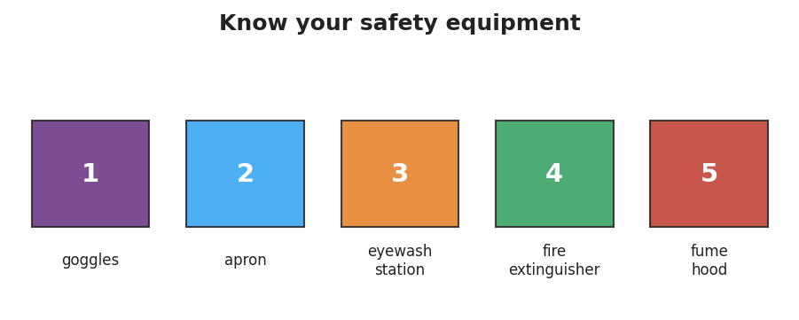

01 Phenomenon
Your teacher tells a story in two acts. In Act 1, a student rushes through a pre-lab checklist: goggles pushed up, wrong gloves, fume hood sash left open. A small splash of liquid reaches the eye area — and the situation turns into a first-aid emergency. In Act 2, the same student, same lab task, same splash — but this time goggles are sealed around the eyes, apron tied, fume hood running. The splash hits the goggle lens and wipes off harmlessly.
02 Driving question
What routines let chemists work with dangerous substances and stay safe?
03 Notice & wonder
| I notice… | I wonder… |
|---|---|
Turn & Talk #1: The splash happened in both Act 1 and Act 2 — the chemistry didn’t change. What specifically was different in Act 2 that stopped the harm from reaching the student? Try to name the specific item or action.
04 Initial model
Before your teacher explains anything, write down your best guess: what are the most important safety items in a chemistry lab, and what does each one protect? List at least three. You may look around the room.
| Safety item | What it protects (your best guess) |
|---|---|
05 Investigate
Part 1 — Safety Equipment Scavenger Hunt
Find each item from the labeled panel below somewhere in your classroom or lab space. Write one sentence describing its purpose in your own words.

| Item | Found it? (✓) | Purpose — write it in your own words |
|---|---|---|
| 1 Goggles | ||
| 2 Apron | ||
| 3 Eyewash station | ||
| 4 Fire extinguisher | ||
| 5 Fume hood |
Part 2 — SDS Interpretation
Use the Safety Data Sheet your teacher provides. Find and record the following three pieces of information.
Hazard statement (Section 2):
Required PPE (Section 8):
First-aid measure for eye contact (Section 4):
Key question: Why does the SDS tell you the first-aid steps and the required PPE — both in the same document?
06 Make it make sense
For each scenario below, identify the hazard, name the missing PPE or safety step, and explain what could happen without it.
A student heats a test tube of liquid pointed directly at a partner who is working nearby.
- The hazard is: _______________________________________________
- The missing safety step is: _______________________________________________
- Without it, what could happen? _______________________________________________
A student adds a chemical to water in a fume hood but is not wearing an apron. The liquid splashes onto their shirt.
- The hazard is: _______________________________________________
- The missing PPE is: _______________________________________________
- The apron would have prevented: _______________________________________________
A student starts an experiment without reading the SDS first. The chemical turns out to require acid-resistant gloves, but they are wearing standard latex gloves.
- The hazard is: _______________________________________________
- What should the student have done before starting? _______________________________________________
- Where would they have found that information? _______________________________________________
07 Key vocabulary
- SDS (Safety Data Sheet)
- a document listing a substance's hazards, safe handling procedures, required PPE, and first-aid steps; the primary reference for working safely with any chemical
- PPE (personal protective equipment)
- gear worn to protect the body from hazards, including goggles (eyes), apron (skin and clothing), and gloves (hands)
- hazard
- something with the potential to cause harm; a hazard does not guarantee an injury, but it demands a control measure
Use each term in a sentence about today’s phenomenon or investigation. Do not just copy the definition — use the word to describe something you observed or did.
SDS (Safety Data Sheet): _______________________________________________ _______________________________________________
PPE (personal protective equipment): _______________________________________________ _______________________________________________
hazard: _______________________________________________ _______________________________________________
08 Revise your model
Return to your Initial Model. Add any items you missed. Then, for each item, add a cause→effect note: what cause (unsafe action) does this item prevent from becoming an effect (injury)?
Then finish this Because / But / So sentence:
A student who skips the pre-lab safety checklist is at risk because __________________________________________, but __________________________________________, so __________________________________________.
09 Exit ticket
A lab procedure calls for heating a liquid that can splash.
- Name two pieces of PPE required for this procedure and explain why each one is needed.
PPE 1: _________________ — needed because: _______________________________
PPE 2: _________________ — needed because: _______________________________
- Where would you look up the specific hazards of the liquid and the correct first-aid response?
- In one sentence, explain why following the safety routine matters. Try to use the words cause and effect or the words hazard and prevent.
10 Explore further
- Safety-equipment scavenger hunt: students locate each piece of equipment from `figures/safety_equipment.png` in the actual classroom/lab space and write its purpose in their own words.
- SDS (Safety Data Sheet) interpretation: using a printed or projected SDS for a common reagent (e.g., hydrochloric acid or hydrogen peroxide), students find the hazard statement, the required PPE, and the first-aid response. No external URL is required; a generic SDS from the school's chemical supplier works well. For a digital interactive option, the NYSED-aligned PhET Chemistry lab-safety module or a brief Javalab "lab tour" walkthrough can precede the hands-on hunt.